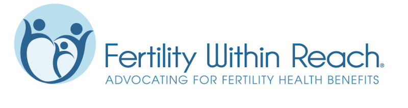

For GYNECA’s 2022 Fall Event, we hosted guest speaker Davina Fankhauser,
the Co-Founder and Executive Director of Fertility Within Reach, a non-profit
whose mission is to “increase access to fertility treatment and fertility
preservation.” The event, organized by Kelly Peterson, Jaia Wingard, and
GYNECA’s Outreach team opened with a productive discussion on the overturning
of the Roe v. Wade decision and the nationwide reaction it sparked. Barnumbia
students from North Carolina, Indiana, Illinois, Maryland and more considered
the probability of life-saving reproductive healthcare being illegalized in their
hometowns and how the decision has affected their personal lives.
After the open discussion, Fankhauser spoke in detail about the legal effects
brought with the overturning of Roe v. Wade. She also cleared up some common
misconceptions about the Supreme Court decision, describing specific life-or-death
situations in which abortion laws can determine who lives and who dies in the name
of protecting the fetus. Finally, Fankhauser concluded by breaking down Fertility
Within Reach’s advocacy efforts, which focus on emailing and speaking with state
representatives directly, describing the fatal consequences of banning certain
fertility treatments. Most importantly, before a brief Q&A, she ended her time
with us by explaining that anyone can and should reach out to their own state
representatives when they they find themselves unhappy with state legislation,
and in times of injustice like the present, it is our responsibility to join and
support advocacy efforts like Fertility Within Reach. Life saving change is only
an email away.
Fertility Within Reach
